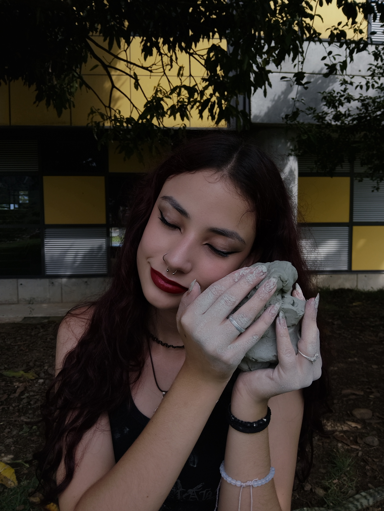
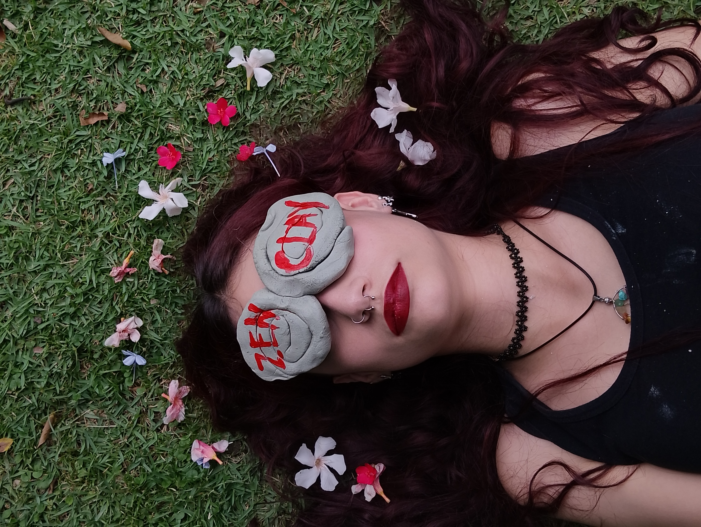
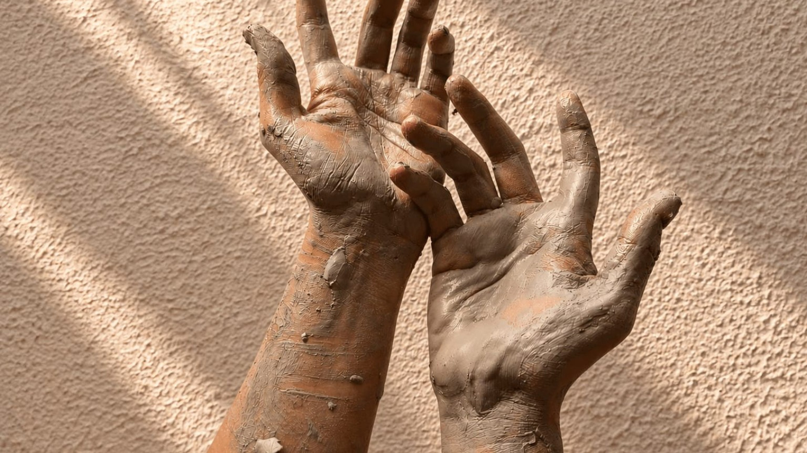

Reduce el estrés
Transforma el tiempo creativo en una pausa consciente para respirar y soltar.
Un espacio para bajar el ritmo, conectar con tus manos y crear algo que sea realmente tuyo.

La arcilla te invita a desconectar del ruido, concentrarte en el presente y disfrutar el proceso sin buscar la perfección.
Transforma el tiempo creativo en una pausa consciente para respirar y soltar.
Experimenta con formas, texturas e ideas sin preocuparte por hacerlo perfecto.
Usar tus manos te ayuda a enfocar la atención en lo que estás creando ahora.
Una experiencia para disfrutar a solas o compartir con las personas que quieres.
No se trata de crear algo perfecto,
se trata de disfrutar mientras lo creas.
Una experiencia pensada para que desconectes de afuera y vuelvas a conectar contigo.
“Una experiencia demasiado bonita. Por un rato me olvidé del celular, del trabajo y simplemente disfruté creando.”
“Pensé que no tenía nada de habilidad, pero precisamente eso fue lo mejor. No había presión por hacerlo perfecto.”
“Fue mi plan favorito para desconectarme. Salí con una pieza hecha por mí y con la cabeza mucho más tranquila.”

Ven a experimentar con la arcilla en un ambiente tranquilo y creativo. No importa si es tu primera vez: te acompañamos durante todo el proceso.

Una experiencia guiada para explorar la arcilla, crear con tus manos y disfrutar el proceso.

Un plan diferente para venir con amigos, pareja, familia o compañeros y crear juntos.
TU MOMENTO ZEN
Reserva tu experiencia, cuéntanos qué buscas y déjanos acompañarte a crear un momento diferente.
Completa nuestro formulario y nos pondremos en contacto contigo.
Ir al formulario ↗